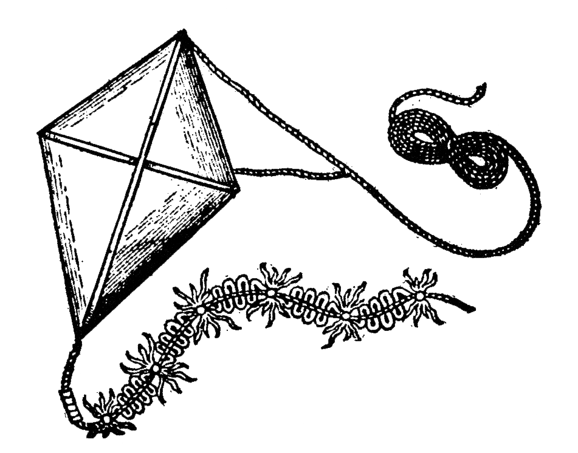
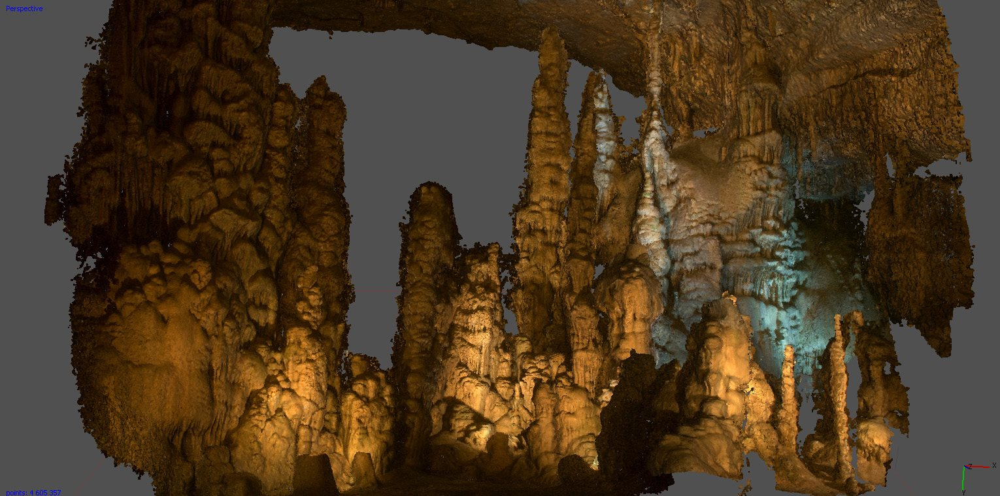
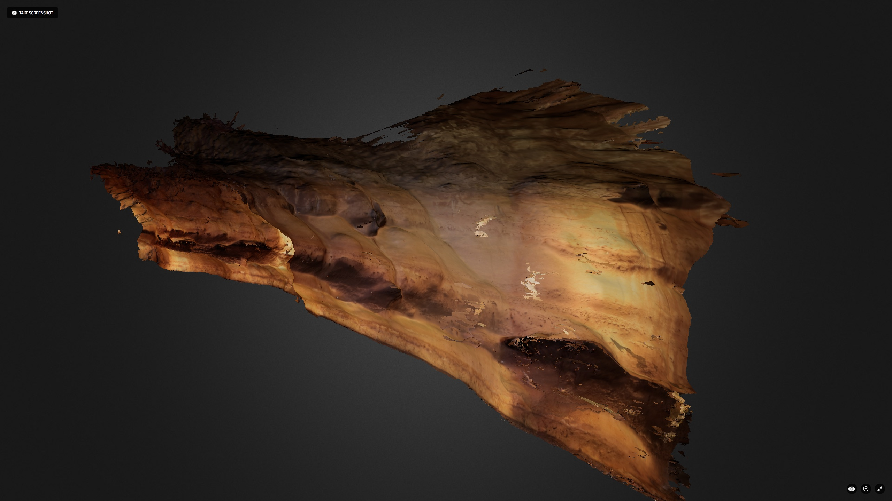
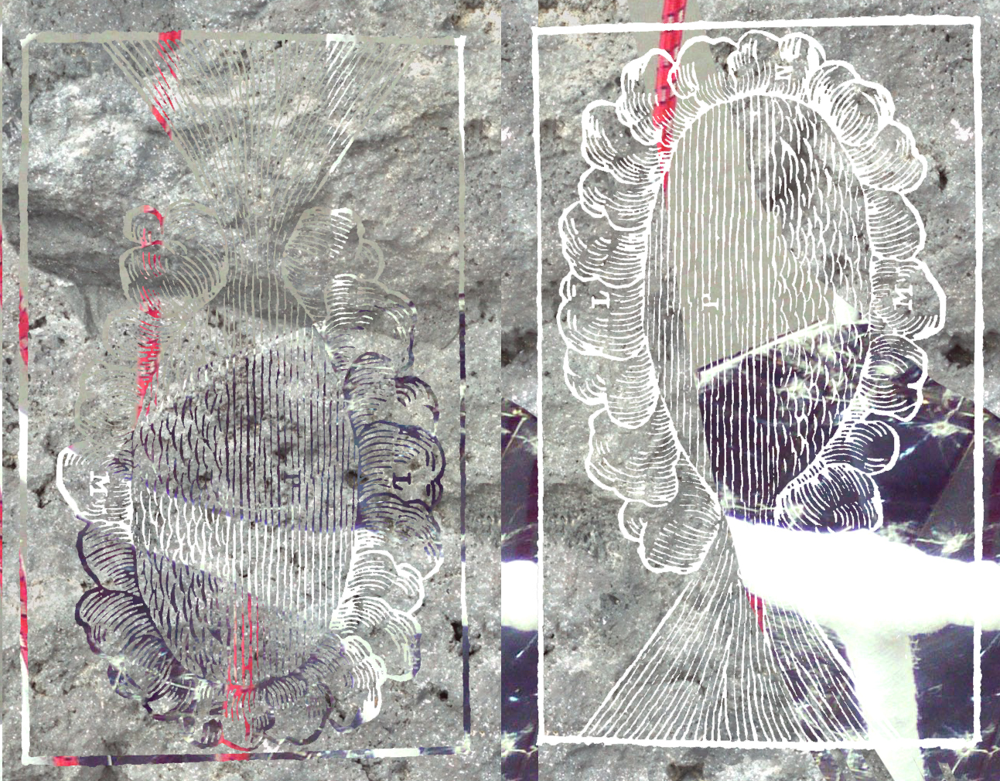

MOM ARE YOU THERE?
SILK GARDENER IN THE LIME LAVA FOREST
- rational/scientific
- hands-on
- sticks to linguistic structures
- pro-urban
- literal/physical approach of nature (EVERYTHING WHERE NATURE THRIVES)
enlarging definition nature, Pro invasive species (invasion biology)
bringing nature to the city - planting in a post-wild world = THE NEW WILD
Educate people by mean making of art
For systematization of nature, nature unnaturally organized
Visuele voorbeelden: Natural History Museum
(Emma Marris, Fred Pearce, Hanski)
APPEARANCE: WEARS A CLOAK WOVEN BY URBAN CATERPILLARS/BEES
SILK GARDENER IN THE LIME LAVA FOREST
- rational/scientific
- hands-on
- sticks to linguistic structures
- pro-urban
- literal/physical approach of nature (EVERYTHING WHERE NATURE THRIVES)
enlarging definition nature, Pro invasive species (invasion biology)
bringing nature to the city - planting in a post-wild world = THE NEW WILD
Educate people by mean making of art
For systematization of nature, nature unnaturally organized
Visuele voorbeelden: Natural History Museum
(Emma Marris, Fred Pearce, Hanski)
APPEARANCE: WEARS A CLOAK WOVEN BY URBAN CATERPILLARS/BEES



PIGMENTED CAVEWOMAN IN THE CLOUD COMPELLING ROCK SITE
- spiritual
- anti-urban
- nature as ‘idea’ of spirit, not literally flora & fauna
- examines spirits embodied in contemporary media
- wants to coin a new language
Spiritual being is still in us
Energy of the cave paintings
experiencing art works
Visuele voorbeelden: Gwion Gwion Paintings,
(Marina Warner, Peter Halley, Walter Benjamin, Werner Herzog)


CRYSTAL DUSTED WITCH
- technological
- progressive
- for invasion of technology on the human body
- we are literally embodied by liquid crystal, which are also used for the manufacturing of our screens. We are technology, humans are nature.
Nature=technology
- historicization of the idea of nature
Science, technology and production simulate the crucial powers of nature.
Suggests different materiality for technology. Draw line with Cronenberg and how non-nature is impermeable surfaces (like technology now). technology should have materiality such as cork and breathing silicone.
Culture seizes the opportunity to simulate the crucial powers of nature: the power of thought for example, repeated in the computer.
Visuele voorbeelden: Cronenberg,
(Roland Barthes, Stelarc, Virginia Heffernan, Cronenberg, )
